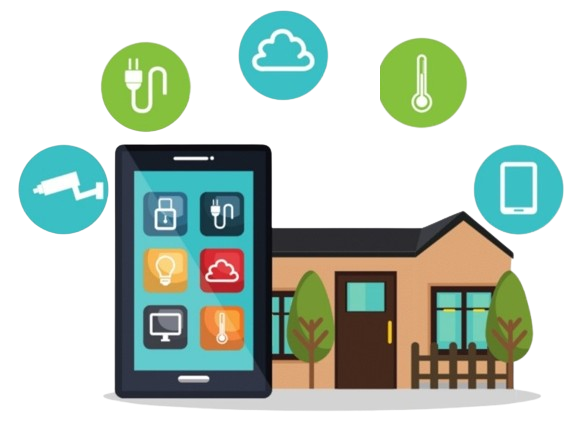

Pametni dom
Kaj je pametni dom?
Pametni dom je sodoben bivalni prostor, v katerem so različne naprave in sistemi povezani v omrežje ter omogočajo avtomatizirano in pogosto daljinsko upravljanje preko pametnih telefonov, tablic ali glasovnih pomočnikov. Tehnologija pametnega doma vključuje vse od razsvetljave, ogrevanja, senčil in varnostnih sistemov do gospodinjskih aparatov, ki so povezani med seboj ter omogočajo učinkovitejše in bolj prilagojeno delovanje. Delovanje pametnega doma temelji na uporabi interneta in različnih senzorjev, ki zaznavajo dogajanje v prostoru in glede na nastavitve uporabnika samodejno sprožijo določene ukrepe – na primer prilagoditev temperature, vklop luči ali zaklepanje vrat. Osnovna ideja pametnega doma je torej ustvariti okolje, ki se zna odzvati na potrebe stanovalcev in jim omogoča večji nadzor, udobje ter pogosto tudi večjo energijsko učinkovitost. 
Zakaj bi si ljudje želeli pametni dom?
Ljudje si pogosto želijo pametni dom zaradi želje po bolj prilagojenem načinu bivanja, ki sledi sodobnemu življenjskemu slogu in tehnološkemu napredku. Takšen dom jim omogoča, da bolje uskladijo vsakodnevne obveznosti, zmanjšajo rutinska opravila ter se lažje posvetijo stvarem, ki so jim res pomembne. Poleg tega jih privlači ideja o večji povezanosti naprav, ki ustvarjajo občutek sodobnega, naprednega in usklajenega življenjskega okolja.